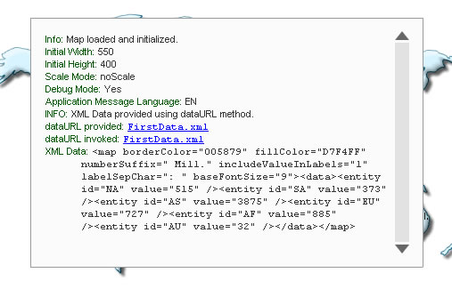
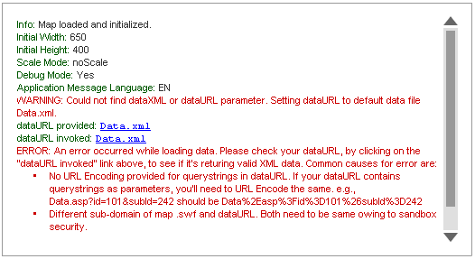

| Debug Mode (Window) |
The debug mode helps you look into what is happening behind the map scenes. It also lists out any errors, if present. You can use the debug window to trouble shoot all your maps. The debug window lists errors like:
In each map, you can activate the debug mode by just enabling the debug flag. A typical debug window for a map that rendered successfully using Data URL method looks as under: |

|
Here, you can see the map with it's Debug Window. The Debug Window contains a lot of information about the map. The contents of the above debug window can be listed as under: |
Info: Map loaded and initialized. |
From the above Debug Window, you can get the following information:
To hide the debug window and see the map below, in Debug Mode, you can click inside the respective map and then press Shift + D. To show it back, again press Shift + D. |
| Enabling the debug Mode |
To enable the debug mode for any of your maps, you just need to set the debugMode flag to 1. |
| <div id="mapdiv" align="center"> FusionMaps XT. </div> <script type="text/javascript"> var map = new FusionCharts("FCMap_World.swf", "Map1Id", "750", "400", "1", "0"); map.setXMLUrl("FirstData.xml"); map.render("mapdiv"); </script> |
The parameter after map width and height is the debugMode flag. Set it to 1, and run the map. You'll now see it with Debug Window. Use the debug window when building the map. Once the map runs fine, set the flag back to 0, so that your end users just see the map and not the debug window. Note: Debug Mode error won't help you solve problems relating to path of SWF file, as the debug mode is a module inside the SWF file. So, unless the SWF file path is correct, you cannot switch debug mode on. Shown below are a few example errors show in debug mode: |
| Data URL and Data String missing |
 |
In this map, we've:
There are more errors and messages that debug window can trap, which we've not shown here. Examples: style related error messages, invalid XML reasons, JavaScript handler error messages etc. All the errors get caught in the Debug Window and you can effectively use it to correct them. The Debug Window is aimed at making your lives simpler as developers. |